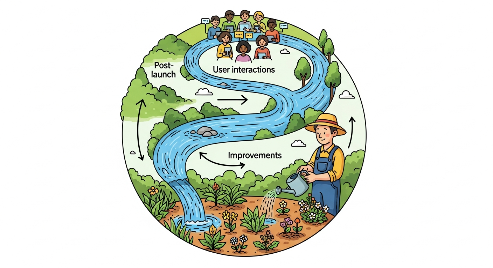

Building learning loops requires all three disciplines: AI PM defines what feedback to collect and how to prioritize improvement areas; Vibe-Coding experiments with feedback collection mechanisms to see what actually works; AI Engineering implements the data pipelines, retraining triggers, and model updates that make learning happen.

Use vibe coding to rapidly prototype and test feedback collection mechanisms before building full production systems. Experiment with different feedback UI patterns, test what signals actually indicate quality versus what users say they want, and explore how feedback data flows into improvement cycles. Vibe coding feedback collection helps you design learning loops that users actually engage with, not just ones that sound good in theory.
Objective: Build learning loops that continuously improve AI products.
Chapter Overview
NEW content. This chapter covers incorporating user feedback, continuous improvement, learning flywheels, and data-driven AI product iteration.
Four Questions This Chapter Answers
- What are we trying to learn? How to build AI products that improve over time based on real-world usage rather than degrading or stagnating.
- What is the fastest prototype that could teach it? Implementing production evals and drift detection for one AI feature and observing what they reveal about real-world behavior.
- What would count as success or failure? Learning loops that detect when AI behavior drifts, capture user feedback effectively, and drive measurable improvements.
- What engineering consequence follows from the result? Launch is not the end; it is the beginning of a learning cycle that distinguishes great AI products from static ones.
Learning Objectives
- Build feedback loops
- Incorporate user signals
- Create learning flywheels
- Drive continuous improvement
Sections in This Chapter
- 27.1 Production Evals
- 27.2 Drift Detection
- 27.3 User Feedback Harvesting
- 27.4 Data Flywheels
- 27.5 Prompt Evolution and Roadmap Updates